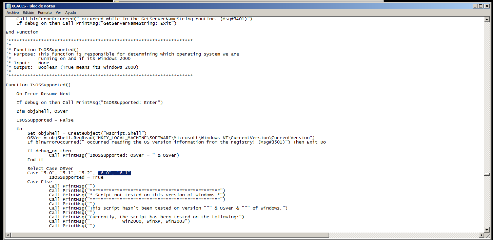
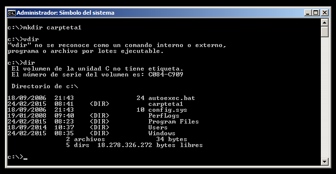

- Módulo: Administración de Sistemas Operativos
- Título del trabajo Generación de usuarios
- Componentes del grupo: Iván José Hernández Regalado
- Curso Académico: 2014/2015
- Fecha de entrega: 1 de Marzo de 2015
Primero configuramos el servidor con un nombre e IP estática que no coincida con ninguna otra de la red local.
Ahora vamos a descargar gAWK que es un lenguaje de programación diseñado para procesar datos basados en texto, ya sean ficheros o flujos de datos. La estructura de los programas AWK se basa en que a AWK se le dan dos piezas de datos: un fichero de órdenes (en nuestro caso el archivo csv que crearemos más tarde) y un fichero primario de entrada (que será el archivo con extensión awk). Lo descargamos de http://gnuwin32.sourceforge.net/packages/gawk.htm.
Ahora lo instalamos para luego agregarlo a las variables de entorno y poder ejecutar el comando desde cualquier directorio.
Para agregarlo a las variables de entorno solo tenemos que ir a las propiedades del sistema y luego en variables de entorno ir a la variable path y añadir la ruta de instalación del AWK separado por ; de la otra variable.
Primero descargamos el archivo de la siguiente ruta http://download.microsoft.com/download/f/7/8/f786aaf3a37b45abb0a28c8c18bbf483/XCacls_Installer.exe. Ahora vamos a decomprimir los archivos en la ruta 'c:\Windows' cuando le demos al archivo exe.
Modificamos el archivo 'c:\windows\XCACLS.vbs' añadiendo lo siguiente buscando "IsOsSupported()":

Lo siguiente será ejecutar el siguiente comando para cambiar el motor de secuencias de comandos predeterminado, de WSCRIPT a CSCRIPT.
Para finalizar vamos desde la terminal al directorio de Windows y ejecutamos el comando 'cscript.exe xcacls.vbs'.
Podemos comprobar el comando creando una carpeta y pasandole el xcacls.vbs para ver si aparecen los permisos de esa carpeta.

Lo primero que debemos hacer es crear el archivo usuarios.csv con el contenido que podemos copiar desde aquí. Luego creamos el archivo alta.awk con el contenido que puedes copiar desde aquí. Tener en cuenta que el archivo alta.awk debemos modificar el dominio y el correo por nuestro dominio.
Ahora vamos a ejecutar el comando para crear el archivo bat de generación de usuarios, el comando es 'awk -f usuarios.csv alta.awk'
Luego solo tenemos que en nuestro directorio activo añadir la unidad organizativa Formacion Profesional y ejecutar el archivo bat.
Una vez completado el archivo bat comprobamos que se crearon los usuarios y grupos como en el archivo csv que creamos.